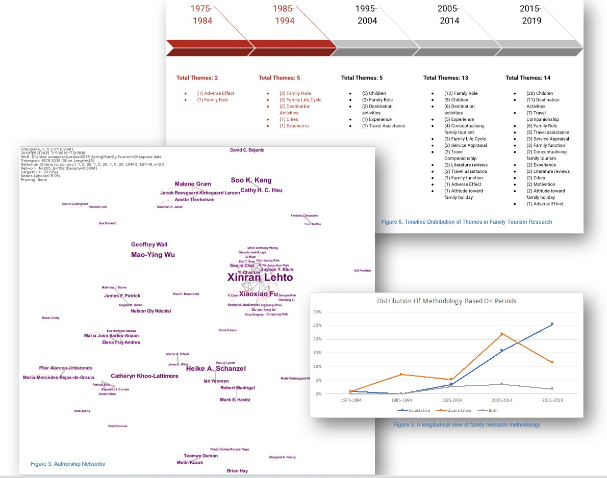

Family Tourism: Past, Present, and Opportunities
Lehto, X.
Chen, J., & Le, U.
Published in Routledge Handbook of Tourism Cities (pp. 207-227)
Goals:
- Provide a comprehensive overview of the current state of research in the field of family tourism, including theoretical and methodological developments, key topics and themes, and gaps in knowledge.
- Identify potential areas for future research in family tourism, highlighting promising directions for further inquiry and potential research questions.
- Offer actionable recommendations and best practices for travel services seeking to cater to families, based on the latest research findings and insights.


Summary:
Despite an increased body of research, family tourism is still an under-researched area. This study sought to establish a better understanding of this domain of research. We conducted a systematic search of family tourism literature using key words including family vacation and family holiday. We identified 159 articles, produced by 184 authors and published over a five-decade period. Based on a meticulous content analysis of these studies, we developed an overview of family tourism as a field, what it has become in theoretical development, topicality and themes, and methodological advances. We suggest ways to move the family research field from a descriptive delineation to a more mature stage built upon theory and methodological knowledge.
My Work:
- Conducted thorough and exhaustive research across multiple databases to gather relevant information
- Performed meticulous content analysis on 159 published articles related to the topic, spanning over five decades (1975-2019)
- Developed a comprehensive and organized database with various categories to efficiently manage and analyze the collected information
- Visualized collaboration networks and identified key contributors and patterns using CiteSpace, a powerful tool for bibliometric analysis
- Co-authored a high-quality published paper based on the research findings, contributing to the scholarly literature in the field

Research clips:
